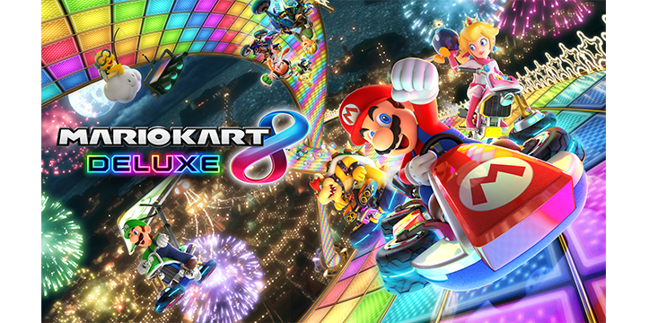

Mario

Mario is tot nu toe bij elke Mario Party een personage. Zijn speciale dobbelsteen, bevat 3x een 3, 1x een 1, een 5 en een 6. Dus opzicht is dat een gemiddelde dobbelsteen.
Luigi

Luigi is net als Mario aanwezig bij alle Mario Party's. Zijn speciale dobbelsteen heeft een 5, een 6, een 7, maar ook 3x een 1, dus het heeft 50% kans dat je goed voor uit gaat, maar ook langzaam gaat.
Peach

Peach is ook altijd aanwezig. Haar speciale dobbelsteen bevat een 0, een 2, een 6, maar ook 3x een 4, dus opzicht is het een goede dobbelsteen.
Daisy

Daisy kwam pas voor in Mario Party 3, maar sinds dien is ze altijd aanwezig. Haar speciale dobbelsteen heeft 4x een 3 en 2x een 4. Dus als je ergens op wilt komen waar je een 3 of een 4 voor nodig hebt, is deze dobbelsteen handig.
Wario

Wario doet al vanaf het bergin mee met Mario Party. Hij heeft alleen niet meegedaan aan de gameboy versie. Zijn speciale dobbelsteen bevat 4x een 6 en 2x -2 muntjes. Dus je komt of ver vooruit, of je verliest muntjes.
Waluigi

Waluigi deed tegelijk met Daisy mee met de Mario Party. Zijn speciale dobbelsteen bevat 2x een 5, een 7, een 1, een 3 en -3 muntjes. Dus je hebt 50% kans dat je ver vooruit gaat, maar ook dat je langzaam gaat of munten verliest.
Yoshi

Yoshi doet ook altijd mee met Mario Party. Zijn speciale dobbelsteen heeft een 0, een 1, 2x een 3, een 5 en een 7. Kortom, de dobbelsteen is gebalanceerd.
Rosalina

Rosalina deed pas mee met Mario Party, na de 10e versie voor de WII U. Haar dobbelsteen bevat 2x 2+ muntjes, een 2, een 3, een 4 en een 8. Dus je kan best wel vooruit met deze dobbelsteen, of je krijg munten.
Donkey Kong

Donkey Kong was in de eerste 4 versies van Mario Party een personage. Daarna werd hij een actie op het spelbord. Sinds Mario Party 10 doet hij weer mee. ZIjn speciale dobbelsteen bevat 2x een 10, +5 muntjes, maar 3x een 0. Dus je hebt 50% kans op iets goeds.
Diddy Kong

Diddy Kong doet pas mee sinds Mario Party Star Rush voor de 3ds. Zijn speciale bevat 3x een 7, 2x een 0 en +2 muntjes. Opzicht dus een goede dobbelsteen, ook al kan je 0 gooien.
Bowser

Bowser was altijd de schurk in Mario Party, tot Mario Party 10. Toen werd hij een speelbare personage. ZIjn dobbelsteen heeft een zonnige kant, een 8, een 9 en een 10, maar ook een donkere kant, namelijk een 1 en 2x -3 muntjes.
Goomba

Goomba is voor de eerste keer speelbaar in Mario Party. Zijn dobbelsteen heeft 2x 2+ muntjes, een 3, een 4, een 5 en een 6. Dus het is een hele goede dobbelsteen.
Bowser Jr

Shyguy was voor het eerst speelbaar in Mario Party 9. Sindsdien was hij weg tot nu. Zijn speciale dobbelsteen bevat een 0, maar 5x een 4. Dus als je een 4 nodig hebt, is deze dobbelsteen handig.
Shyguy

Wario doet al vanaf het bergin mee met Mario Party. Hij heeft alleen niet meegedaan aan de gameboy versie. Zijn speciale dobbelsteen bevat 4x een 6 en 2x -2 muntjes. Dus je komt of ver vooruit, of je verliest muntjes.
Koopa Troopa

Koopa Troopa heeft hetzelfde als Shyguy: deed mee in 9, en is nu weer terug. Zijn dobbelsteen bevat een 10, een 2, 2x een 3 en 2x een 1. Zijn dobbelsteen is langzaam, tenzij je een 10m gooit.
Boo

Boo is sinds Mario Party 5 vaak speelbaar geweest als personage. Zijn dobbelsteen bevat 2x een 5, 2x een 7 en 2x -2 muntjes. Dus je schiet of vooruit, of je verliest munten.
Morty Mole

Morty Mole is een nieuwe personage in de Mario Party series. Zijn dobbelsteen bevat alle getallen, behalve een 1, want die is vervangen voor +1 munt. Dus opzicht een goede dobbelsteen.
Hammer Bro

Hammer Bro was een keer speelbaar, en dat was in Mario Party 8. Nu is hij weer terug., Zijn speciale dobbelsteen bevat 3x een 5, 2x een 1 en 1x 3+ muntjes. Dus je schiet of vooruit, of je krijg munten, of het gaat langzaam.
Dry Bones

Dry Bones was speelbaar in Mario Party 7 en 8 en een baas in Mario Party DS. Nu is hij weer een personage. Zijn dobbelsteen bevat voor 50% een 1, dus je kan langzaam gaan, maar ook 50% een 6, waardoor je snel gaat.
Pom Pom

Pom Pom is nieuw in Mario Party. Haar dobbelsteen bevat 4x een 3, een 0 en een 8. Dus als je een 3 nodig hebt of vooruit wilt, is dit een goede dobbelsteen.
Mario kart 8 deluxe

Iedereen heeft ooit wel Mario kart gespeeld op de DS of op de Wii. Na 8 verschillende Mario karts is er nu een nieuwe ontwikkeld uit de oudere series: Mario Kart 8 Deluxe. Het spel bevat 48 races, zoasls Sweet Sweet Canyon, Rainbow Road en Dino Dino Jungle, 12 cups en heeft 42 verschillende personages van Mario zelf, zoals Luigi, Yoshi en Bowser, maar ook uit verschillende games, Zoals van Zelda Link of van Splatoon Inkling boy of Inkling girl. Het is helemaal nieuw vergeleken de oudere versies, want nu kan je racen ondersteboven door de zwaartekracht en de parcours zien er veel moderner uit dan vroeger, zoals Luigi’s Mansion, Baby park en Battle course 1.

Favorite Races
Hier zijn een aantal van mijn favoriete racebanen:
Sweet Sweet Canyon

Sweet Sweet Canyon is de derde race in de eerste cup (de Mushroom cup) in Mario kart 8. Het hele landschap is gemaakt van zoetigheid. Van bomen van snoep tot short-cuts van donuts. Deze baan is een van mijn favoriete, omdat ik het een unieke baan vindt en er best zin krijg in snoep als ik de baan zie.
Baby Park

Baby Park is een race die je kreeg als DLC bij Mario kart 8. Nu bij Deluxe, kan je het al spelen zonder DLC te kopen. Baby park zit bij de Crossing cup als eerste race. Hij is al bij meerder Mario Karts voorgekomen, zoals bij de DS versie. Baby Park is leuk, omdat je integenstelling tot de andere races, je zeven laps rijdt en het een leuke chaos is op de baan, want je rijt met zn allen 7x dezelfde rondje.
Rainbow Road

Rainbow road wordt bij elke Mario Kart als een terrorbaan gezien, omdat de meeste mensen er super snel van afvallen en het meest moeilijke parcour is van de game. Mario Kart 8 Deluxe heeft hun Rainbow road moderner gemaakt, wat het uniek maakt en door de mooie details zoals in de baan en de satelieten, vind ik deze baan een van mijn favoriete.

/cdn.vox-cdn.com/uploads/chorus_image/image/61649041/Sw_SuperMarioParty_090618_PressKit_SCRN_01_bmp_jpgcopy.0.jpg)